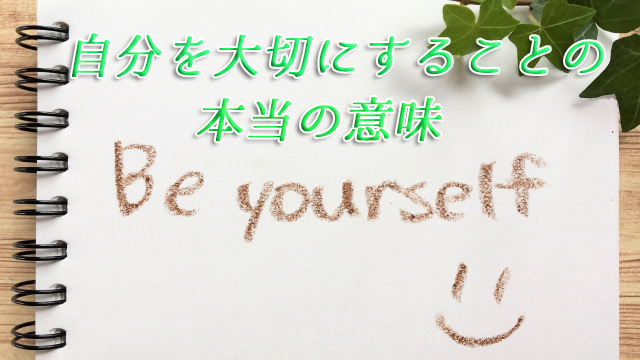

「自分を大切にしなさい」という言葉をよく聞く。
「もっと自分を大切に」とか「自分を大事にしろ」というとき、私たちは他人の顔色や思惑をうかがう余り周囲に振り回され自分を見失っている人が多いと気づいているからだ。
実際、孤立を恐れて好きでもない友人仲間から離れられずズルズルと引きずられたり、本心は別なのに相手に嫌われたくないために同調してしまうのは子ども―特に女の子―集団でもよく見られる光景だ。ここには自己卑下の気持ちあるいは自己犠牲によって何とか自分を生き残らせたい思いがある。
子どもに限らず大人でも同じ状況にある。自分に自信が持てず、皆がそうしているからと世間のルールやしきたりに無批判に従うだけで本当の自分を生きていない。だから心は満たされず苦悩の日々が続く。
私にも経験があるが、私たちはいつも他人の眼に自分がどう映っているか気にして生きている。「こんなこと言って変に思われないか」とか「自分の考えがどう受け取られただろうか」と常に周囲をうかがいながら波風の立たない範囲で無難な言動に終始する。そうして後になって「やっぱりあのときちゃんと言うべきだった」「自分の思いを貫けばよかった」と悔やんでしまう。なのに翌日からはやはり「自分を押さえる」日々が始まる。こうして苦悩のループは続いていく。
そんなとき「もっと自分を大切に」という言葉が心に響く。それほど私たちは日頃自分を大切に扱っていなかったことに気づくからだ。
自分と他者を切り離さない
ところで「自分を大切にする」とはどういうことだろう。
他人に振り回されることを止め、もっと自分らしく生きるという意味なのか。自分を主体として確固とした基準をもちそれに従って生きることなのか。
確かにそれには一理ある。他人が何と言おうと正直に自分の考えを明確にすること。ブレない軸をもつことは大切だ。自分に正直であることは自分を大切にする第1条件といえる。
しかし、それはどんな場合も他者を無視して自説を押し通すことではない。唯我独尊が自分を大切にすることではないからだ。「他人に従いたくない」と考えている限り、他者を自分と対立する存在と見なしていることになる。それだと自分を通すために他者と闘わなければならなくなる。
一部の組織内権力者、政治家や街の顔役、ママ友グループのボス的存在に至るまでこのような「自我主義の人」は、他者に君臨することで自己を押し通そうとするが、彼らに平安が訪れることはない。
他者を対立する存在（敵対者）と見なす以上、自らも常に他者からの挑戦にさらされるからだ。闘う姿勢をもつ限り闘うべき相手（敵）が次々と現れる。心の休まる暇はない。
これではやはり他者に「振り回されている」現実は変わりはない。先の自己犠牲に甘んじる少女たちと何の違いもない。自我主義の人は決して自分を大切に扱っているとは言えないのだ。
だから「自分を大切に」というのは自己中心主義になることではないし、もちろん自分を犠牲にして他者に従うことでもない。
大切なことは自分と他者を対立概念でとらえないこと。利害の対立、個性の違いなどは表面的なことで実は私たちは深い部分で皆つながっている。まずこのことを理解したい。自と他を切り離すのではなく、根底のところでは一体であるというつながりを直視すれば他人にすることは自分にすることであり、その逆もまた真であることを知るだろう。
20世紀の初め、スイスの心理学者Ｃ・Ｇユングは「人間の無意識―個人的無意識を超えたもっと深い層において―はすべてつながっている」と説いた。いわゆる集合的無意識のことだが、私たちは無意識（潜在意識）レベルで想像以上に情報のやり取りをしていることは確かなのだ。
だから他人に親切にすれば他人から親切にされる。自分を大切にしない人は他人からも大切にされない。そこには無意識下の「つながり」があるからと考えれば納得がいく。
自我をゆるめて自分らしさを表現する
私たちはどうしても自分の肉体を境界線として、内と外つまり自分とそれ以外に分けて考えてしまう。この分離意識が「自」と「他」を際立たせることになる。他人を意識すればするほど、自我は肥大し他者から身を守らねばと身構えたり逆に他者に操られる元になる。
だから最初にやるべきことは、この「自分」という自我意識を思い切って緩めること。せまい「自己」という囚われから自分を解放して全体と一体となる感覚に身を包むことだ。
それは決して自分を殺して他者を優先することではない。周囲に同調するとか理不尽に耐えることでもない。
そうではなくいつも外側へばかり向いている自分の意識をいったん自分の内側に向けること。それによってそこに流れている全体のエネルギーと調和を図るということだ。
それは、五感を通して入ってくる外部の情報―他人の言動や世間の声など―の洪水をいったん遮断して、自らの中心部その根源からわき起こる本当の願いや心の声に耳を澄ますということ。
その上で本当に表現したいこと、本心が語っている自分の真実を表明すればいい。これは自我（表面的自己）の主張ではなく心をオープンにした結果、周囲との調和（自他一体）を起こしたことになる。多くの人の共感を呼ぶだろう。
自我（エゴ）という表層意識を緩めることで、つまりオープンにすることでかえって「自分らしさ」を表すことができる。
その根源から発せられる真なる想いは、他者の同じく根源の想いに達することができる。なぜなら私たちは深いレベル（根源）ではつながっているから。
自己の周囲に張りめぐらせた壁を崩すことで私たちは他者と一体となることができる。そのとき、もはや他者を対立者と意識することはない。他者は自分を映す鏡であり、ある意味で他人は自分の一部なのだ。この場合の他者とは、人だけでなく周囲の状況や出来事も含む。
つまりそこに気に入らない他人がいるのなら、それはその人を通して自分の中にある「受け入れていない部分」を教えてくれていると考えればよい。それに気づき受け入れたら、嫌味を言う他者は消えるかまったく別の―たとえば打って変わって理解ある―人間となったりする。
「自分を大切にする」とは決して他者を操って自分を押し通すことでも、謙遜を装って人間関係をうまくやり過ごすことでもない。また他者を無視して生きることでもない。
自分の内側に意識を向けその中心部にしっかり根をおろすことで、他者の内面とのつながりを感じながら全体と調和して動く。他者を気にせず自分の内奥の声を聞きしっかりと表現すること。
これが真実の意味で「自分を大切にすること」であり、自分を大切にすることで全体を生かす究極のあり方である。全体とは他者も自分も含む状況すべてのことだ。
私はこの姿勢をとるようになって劇的に人間関係や状況は変わった。以前のようなトラブルや困難は大幅に減った。
自分を大切にした。つまり他者を大切にするようになったからだ。